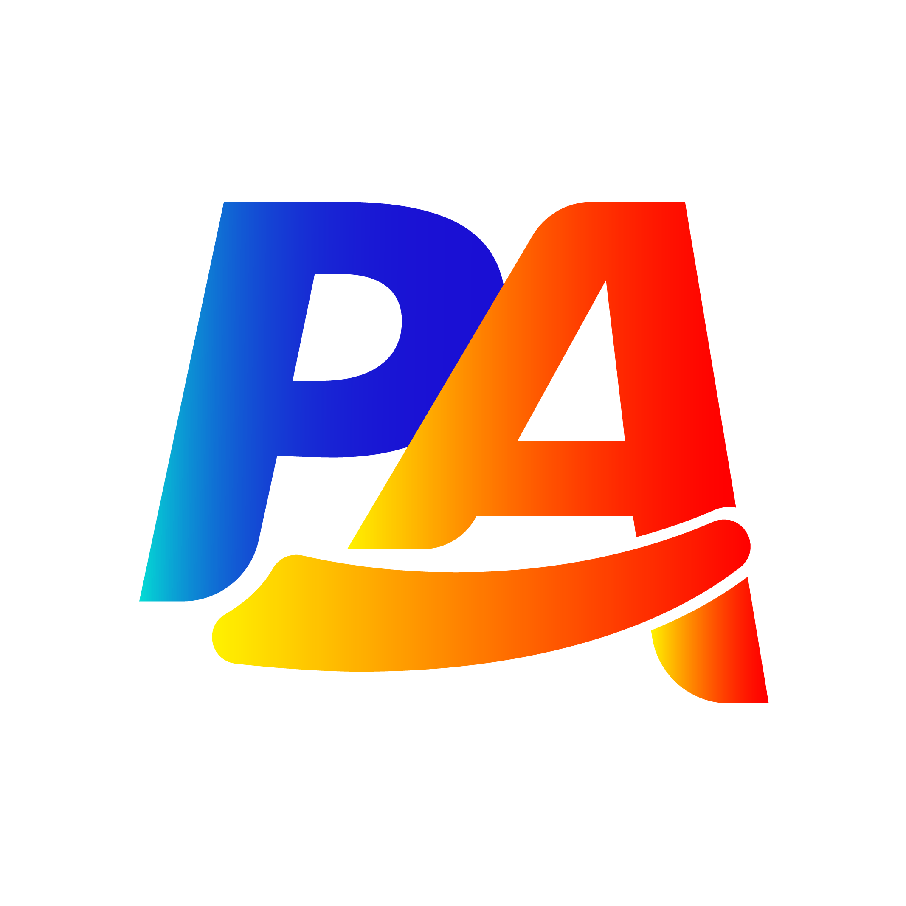
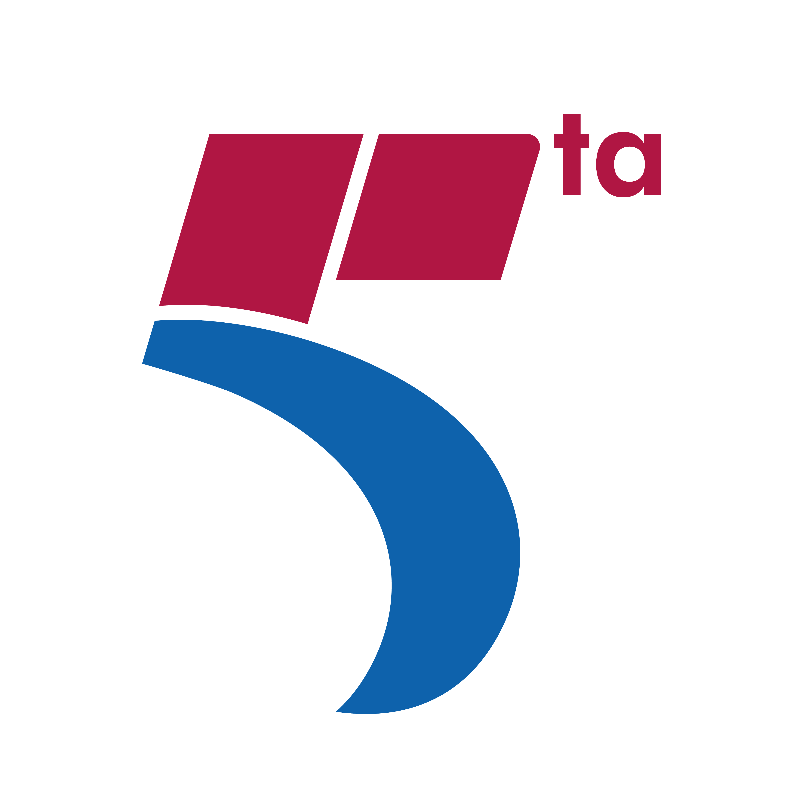
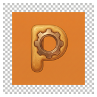

Criterio financiero
Análisis de cuentas, costos operativos y control presupuestal para comprender lo que hay detrás de los datos.
CONTADOR PÚBLICO COLEGIADO + DESARROLLADOR
Soy Jonathan Valdivia. Conecto la experiencia en finanzas y operaciones con el desarrollo de software para resolver problemas reales de negocio.
Entender el proceso.
Construir la solución.
01 / PERFIL PROFESIONAL
Mi punto de partida es el proceso, las personas y la información que necesitan para decidir.
Soy contador público colegiado por la Universidad Católica San Pablo y profesional técnico en Ingeniería de Software con Inteligencia Artificial por SENATI. Complemento esta formación con estudios de MBA en Gerencia Financiera y de Riesgos en la UNSA.
He trabajado en control de costos, liquidaciones, inventarios, compras y gestión de información en SAP y sistemas ERP. Esa experiencia me permite traducir necesidades operativas en herramientas digitales con un propósito claro.
Conoce mi trayectoriaAnálisis de cuentas, costos operativos y control presupuestal para comprender lo que hay detrás de los datos.
Conocimiento directo de logística, proveedores, inventarios y controles documentarios.
Desarrollo web y móvil, análisis de datos y automatización de tareas para simplificar el trabajo.
02 / PROYECTOS

Más claridad para tus finanzas.
Control financiero en tu bolsillo.
Aplicación móvil para organizar préstamos y deudas, consultar reportes y mantener la información sincronizada entre usuarios.
Hacer más sencillo el seguimiento de compromisos financieros.
Aplicar el conocimiento contable al desarrollo de una herramienta móvil práctica.

Calcula tu renta. Entiende tus retenciones.
Tus impuestos, con mayor claridad.
Aplicación Android para calcular el impuesto a la renta de trabajo de cuarta y quinta categoría en Perú, y verificar si el empleador aplica correctamente la retención mensual de renta de quinta categoría.
Ayudar a los trabajadores a comprender su impuesto a la renta y comprobar sus retenciones mensuales.
Conectar el conocimiento tributario con una herramienta móvil para calcular y contrastar los importes retenidos.

La gestión de tu panadería, en una aplicación.
Tecnología adaptada a la operación de una panadería.
Aplicación Android a medida para una empresa de panadería, con ventas, gestión de inventarios y reportes. Un proyecto de mi portafolio enfocado en las necesidades y los procesos específicos del negocio.
Facilitar el seguimiento de las ventas y las existencias en la operación diaria de una panadería.
Traducir las necesidades de la empresa en una herramienta móvil que acompañe su forma de trabajar.
03 / EXPERIENCIA
Experiencia en empresas de alimentos, transporte, panificación y hotelería. Responsabilidad sobre información, recursos y procesos de negocio.
Ver trayectoria completaExperiencia corporativa documentada
Costeño Alimentos S.A.C.
Racionalización Empresarial S.A. · RACIEMSA
Industria Panificadora Americana
RACIEMSA · Administración y Contabilidad
Hoteles del Sur S.A.C. · Grupo Estelar
04 / FORMACIÓN & HERRAMIENTAS
TÍTULO UNIVERSITARIO · COLEGIADO
Universidad Católica San Pablo
2009 — 2014Auditoría, tributación, estados financieros bajo NIIF y control interno.
TÍTULO PROFESIONAL TÉCNICO
SENATI
2023 — 2025Desarrollo de software, automatización y análisis de datos.
ESTUDIOS DE POSGRADO
Universidad Nacional de San Agustín
Desde 2020 · En cursoRiesgos de liquidez, mercado y crédito; valorización de empresas.
Negocio y tecnología, en el mismo lenguaje.
05 / CÓMO PUEDO APORTAR
Desde entender el proceso hasta desarrollar una herramienta que ayude a gestionarlo.
Aplicaciones y herramientas de gestión adaptadas a procesos concretos de tu negocio.
Menos tareas repetitivas y una información más ordenada para el trabajo diario.
Una mirada contable y operativa para identificar qué medir, controlar y mejorar.
06 / CONVERSEMOS
¿Buscas desarrollar una herramienta, mejorar un proceso o sumar un perfil que entienda finanzas y tecnología? Cuéntame qué necesitas.
contaled.vct@gmail.comArequipa, Perú
Completa los datos para preparar tu correo.